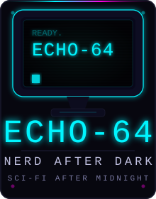

CRT monitor silhouette. Works as sticker, pin, patch, or chest print. The single-color version is ready for screen printing — change fill to match ink color.
Horizontal lockup. NERD in cyan, AFTER in light grey, DARK in magenta. Use in site header, social banners, email headers.

Primary swag mark. Icon + ECHO-64 + NERD AFTER DARK stacked. Works at all sizes from 2" sticker to full back print. Corner dots give it a retro badge feel.